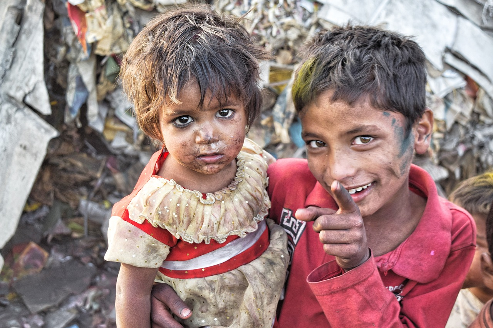

Principais ações para acabar com a pobreza
Devemos destacar que a pobreza em si já é um problema mundial, todavia, isso não significa que a eliminação deste problema seja algo impossivel de se combater, para que isso aconteça, devemos trabalhar em união, ou seja, atráves de várias ações e gestos podemos exterminar este obstáculo de vez. Algumas ações são: Acesso geral a uma educação de qualidade, eliminar a desigualdade social, mais oportunidades de empregos, combater a desigualdade de gêneros, apoiar a reintegração das mulheres no mercado de trabalho etc.